To read more about how Privateer for ChimeraX works, or to cite the use of this tool, please read PAPER CITATION GOES HERE.
Privateer validates carbohydrates by checking for unlikely ring conformations and linkage stereochemistry. It also checks glycan composition against glycomics databases and validates linkage torsion angles against those expected from existing structures containing the same linkage type. The output of these checks is summarised in a visual validation report to allow easy identification of issues. [1] The validation metrics and the format of the validation report were further developed for the Privateer WebApp [2] and the Privateer bundle for ChimeraX follows this same format.
To run carbohydrate validation on a structure, first ensure that the correct model ID is selected from the dropdown menu, then press the "Run Privateer" button.
The validation reports display in a separate tool window. If you "Run Privateer" multiple times it will create multiple tabs within this window, named according to the Model ID of the model they correspond to.
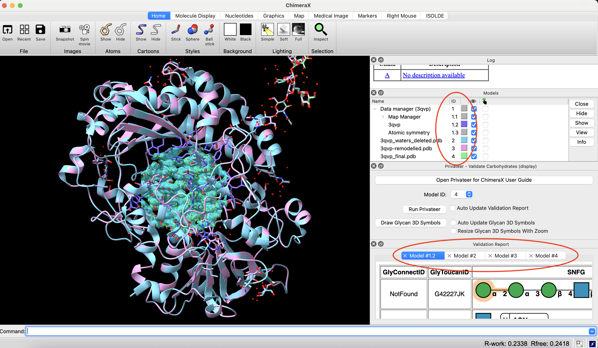
If you "Run Privateer" multiple times on the same structure, the tab corresponding to the most recent tab is the only active one, with all other validation reports corresponding to that Model ID becoming inactive.
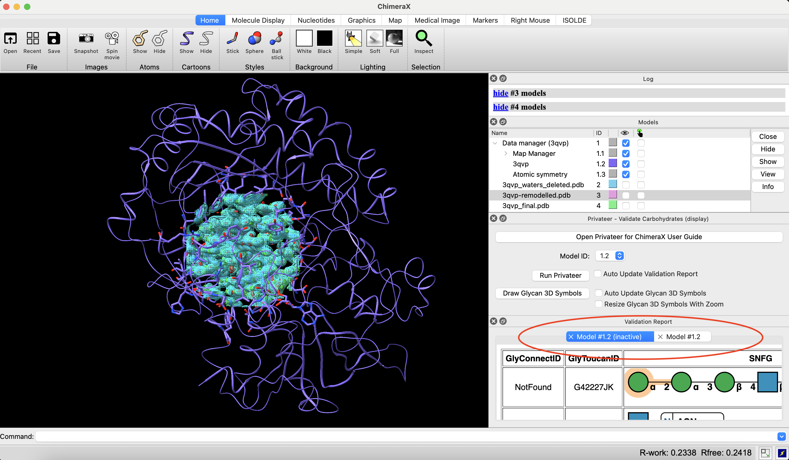
The report itself contains a table listing all the glycans in the structure.
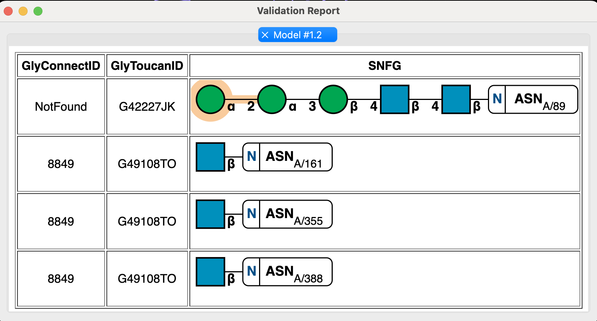
Privateer searches the GlyConnect and GlyToucan databases for each of the glycans. If found, the corresponding IDs of the glycan in each database are displayed in the first two columns of the validation report table.
Privateer also produces an interactive SNFG (a pictoral visualisation of the glycan). This is displayed in the third column of the validation report table. Hovering your mouse over the different elments of this SNFG will display tooltips, providing more information on conformations, linkage types, and torsion angles.
Sugars in unlikely ring conformations are highlighted. Clicking on a sugar will center ChimeraX's view on that sugar. Hovering over the sugar will display a tooltip with more information.
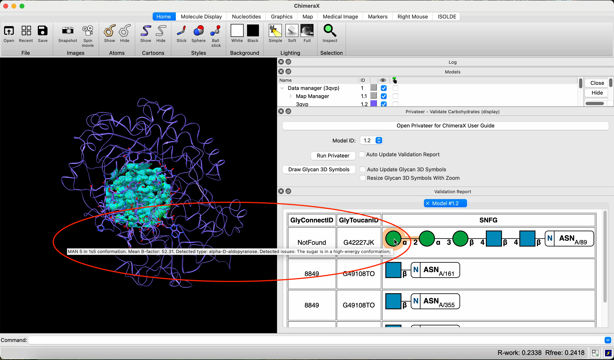
Linkages which are torsion outliers (compared to Privateer's torsion database [3]) are highlighted. Hovering over the link itself will display a tooltip with information on the linkage type and the torsion angles.
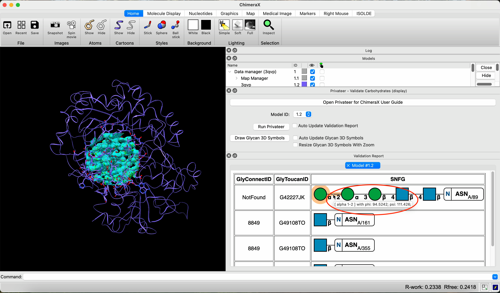
Hovering over the highlighted portion around a highlighted link will display a tooltip with information on the z-score (indicating how much of an outlier it is).
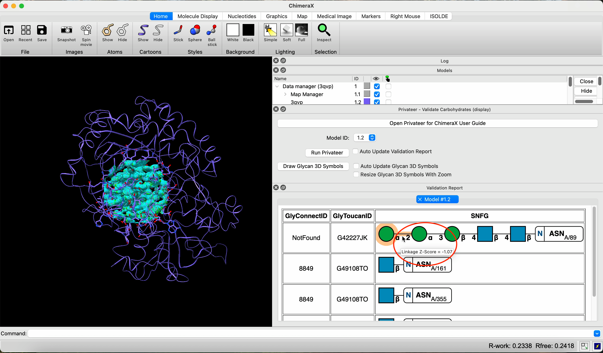
A torsion outlier does not necessarily indicate an error. The link could be being skewed by interactions with neighbouring residues. To investigate further, you can click on the linkage. This will display a torsion plot of that linkage, overlayed with data from Privateer's torsion database. You can click on any link in this way, not just highlighted ones, however a torsion plot will only display if there is enough data on that linkage in the torsion database.
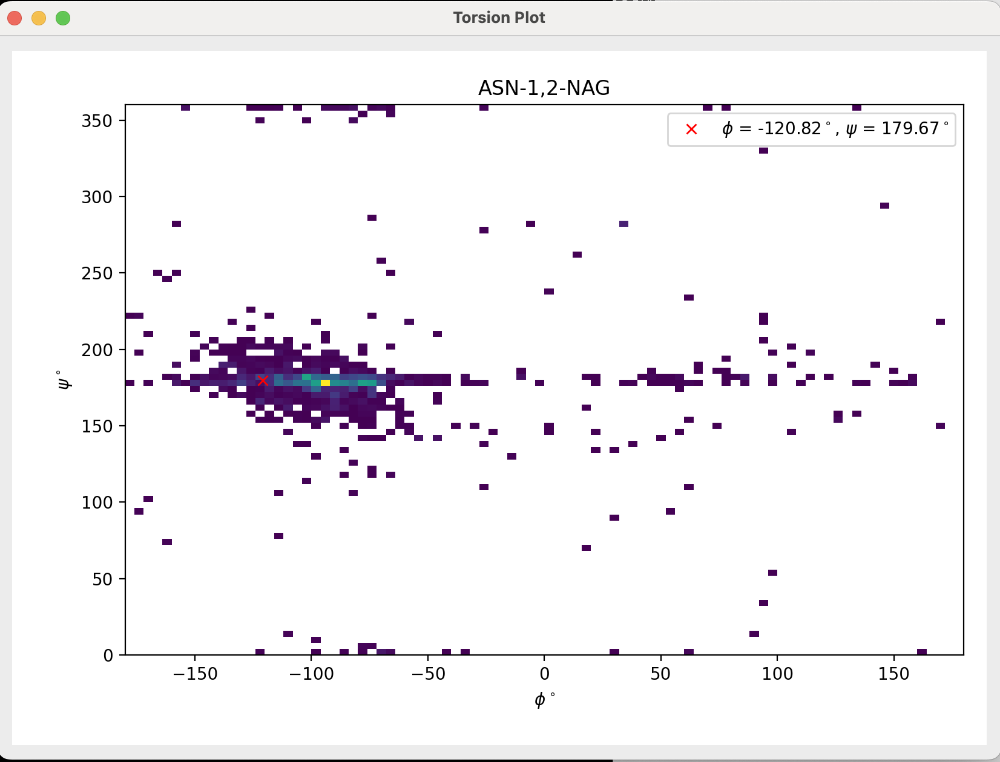
You should also look at the linkage in question in ChimeraX's main view window to look for possible interactions and to check the fit to the experimental data.
If you want the validation report to update as you edit the structure, tick the box "Auto Update Validation Report". You can tick and untick this box as needed while editing. If changes are made with the box unticked, those updates will be made as soon as the box is ticked. The status of the box will apply to all active validation reports produced for all structures. Any inactive reports will not update no matter the status of the tick box.
To help visualise the glycans within the structure, Privateer procudes a 3D representation of them in ChimeraX's view. These 3D shapes and colours match the 2D SNFGs produced in Privateer's validation report. The alignment of the shape shows the plane of the sugar ring.
You can view this 3D glycan representation by pressing the "Draw Glycan 3D Symbols" button. They will display as a sub-model of whatever model they belong to.
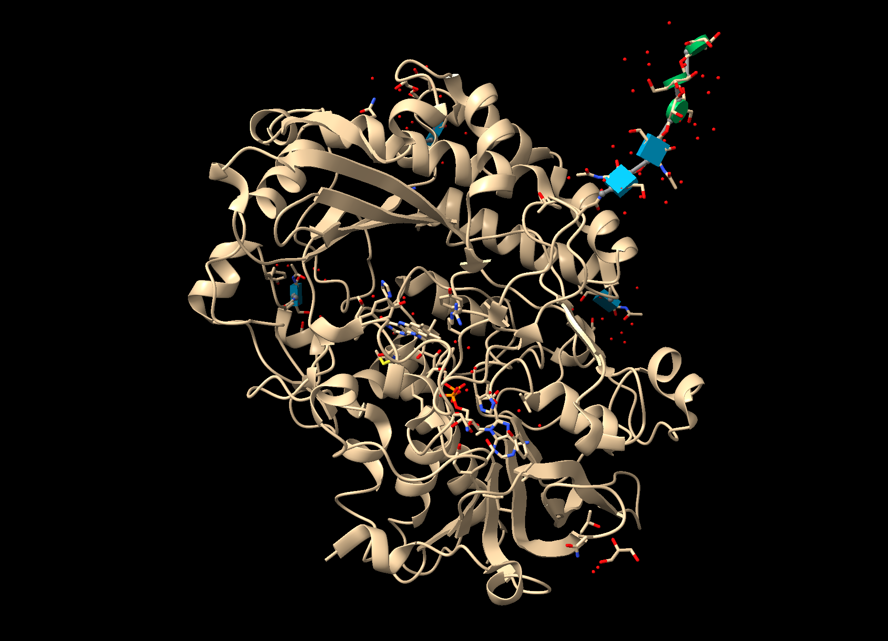
If you no longer wish to view the glycan 3D symbols, their display can be toggeled on and off via the "Models" window in ChimeraX in the same way as other models. They can also be removed (or closed) completely in the same way as other models, using the "close #ID" command where "ID" is the model ID corresponding to the 3D glycan symbols.
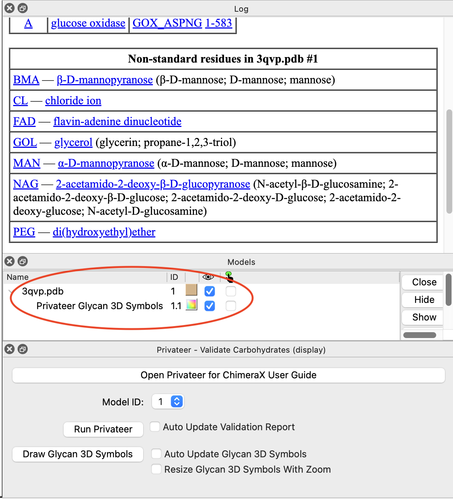
If you want 3D glycan symbols to update as you edit the structure, tick the box "Auto Update Glycan 3D Symbols". You can tick and untick this box as needed while editing. It's status will apply to all structures. If changes are made with the box unticked, those updates will be made as soon as the box is ticked.
If you want the 3D glycan symbols to scale their height (the dimension normal to the plane of the sugar ring) with zoom, tick the box "Resize Glycan 3D Symbols with Zoom". This will increase the height of the glycan symbols in the direction normal to the plane of the sugar ring the more you zoom out of the structure, to ensure that the shapes are still clearly visible.
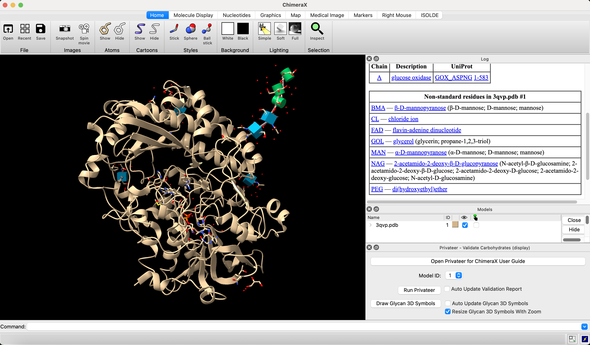
When zooming in, the height of the glycan symbols smoothly descreases until it reaches the default.
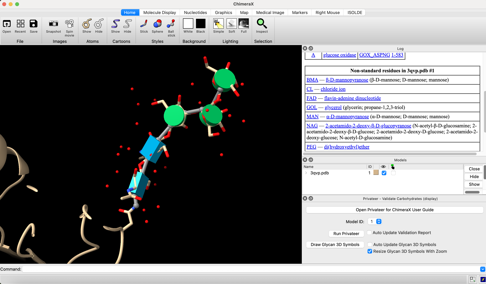
This is useful if you are looking to get an overall picture of how the glycans are interacting with binding sites, for example. You can tick and untick this box as you need. It's status will apply to all structures.
[1] Agirre, J., Iglesias-Fernández, J., Rovira, C., Davies, G.J., Wilson, K.S. and Cowtan, K.D., 2015. Privateer: software for the conformational validation of carbohydrate structures. Nature structural & molecular biology, 22(11), pp.833-834.
[2] Dialpuri, J.S., Bagdonas, H., Schofield, L.C., Pham, P.T., Holland, L., Bond, P.S., Sánchez Rodríguez, F., McNicholas, S.J. and Agirre, J., 2024. Online carbohydrate 3D structure validation with the Privateer web app. Structural Biology and Crystallization Communications, 80(2), pp.30-35.
[3] Dialpuri, J.S., Bagdonas, H., Atanasova, M., Schofield, L.C., Hekkelman, M.L., Joosten, R.P. and Agirre, J., 2023. Analysis and validation of overall N-glycan conformation in Privateer. Biological Crystallography, 79(6), pp.462-472.